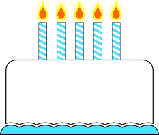
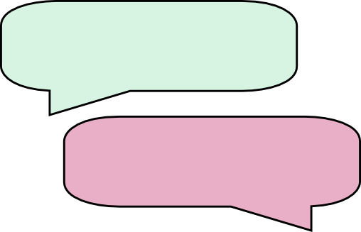
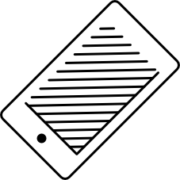
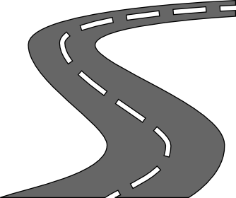
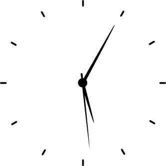
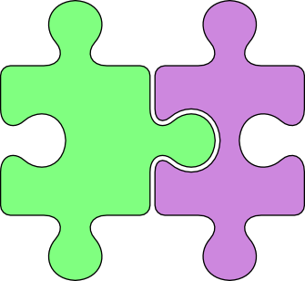
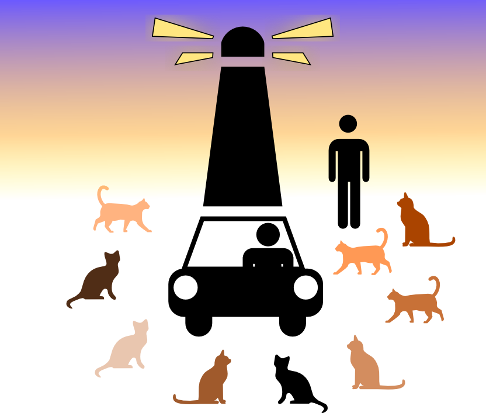
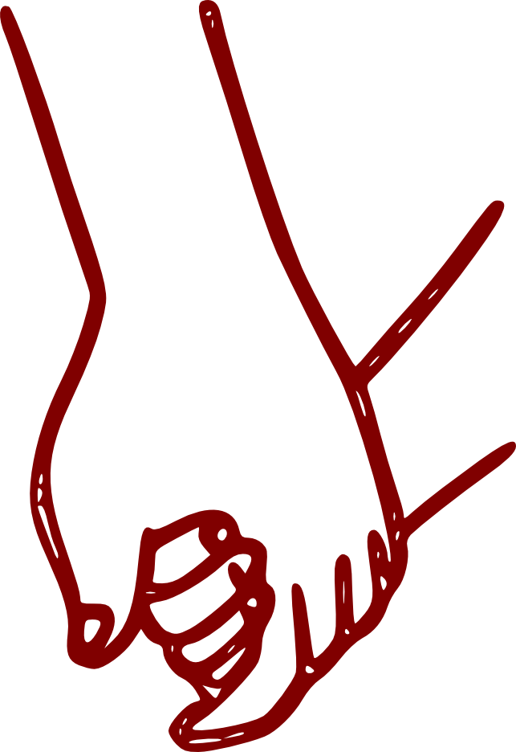
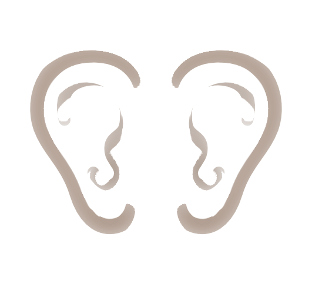
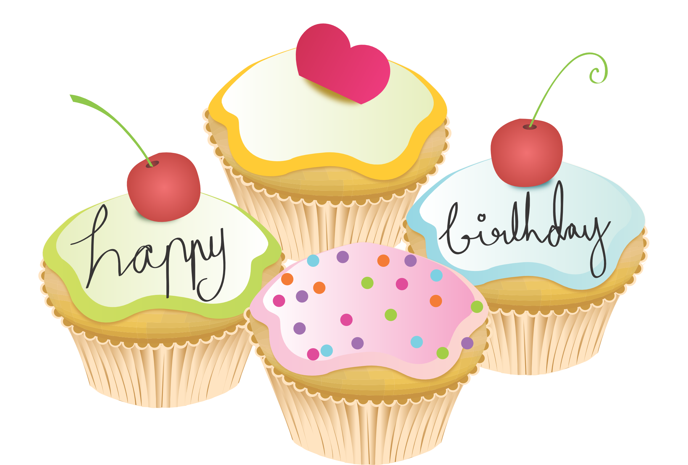

Happy Birthday
Story
By
Favourite Distraction
Every birthday should be marked with a card and a present and here is mine to you.
Happy Birthday to you,
Happy Birthday to you,
Happy Birthday Dear MC,
Happy Birthday to you!
Hip Hip Hooray!
Hip Hip Hooray!

Once upon a time there were two people who lived far, far apart. They travelled over land and sea just to spend a little bit of time with each other.
But the distance didn't deter them. They were strong and so were their feelings. They wanted to fight for this love and make it become everything they wanted and more.

And in the beginning they would talk so much. Text after text after text, until their thumbs were sore and their eyes barely open.
But they always wanted to know more. They wanted to hear those words and see them being spoken. The smiles on the faces and the glint in their eyes.
The look of love you might call it.

So they spoke on the phone and saw each other through the video camera.
Her battling with buses, him knowing he'd have to face the arduous task of climbing the hill on his bike to get home but he knew he could do it with the energy he got from seeing her.
This energy would later be crucial in the story for he would no longer have to make energy sapping bike rides but hundreds of kilometre treks across the country but still she was always by his side.


And when the opportunities to be together came they seized and pounced on them, desperate to make the most of every single second they had together.
Doing things they'd never dare do alone but together they were stronger, braver and two as one.

He was there protecting her, from dogs that bark menacingly to a destruction of cats that surrounds the car and pins her to her seat, as he'd sworn to do from the first night he let his feelings be known.

And she was happier than she'd ever been (he'd promised that one too). He looked out for her like no one else could. He still called her 'challenging' but she'd learnt to 'read him like a book'.
She saw him grow as responsibility befell on him and felt proud for the way he tackled it, the way it changed him, but for the better. A new man emerged but still the same guy she'd always loved just with extra drive and determination to make the best and be the best for everything that came to him in this world.
Their love could have changed, they faced challenges but how they felt always won out. They laughed more, grew closer, when they were together they were inseparable.
It's not perfect, nothing ever is. That's the beauty of it. Their love overcomes everything, those imperfections, those struggles were their building blocks not their barriers.
And the best part about this story? It doesn't have an ending, not yet, not ever. It's not meant to. Every day adds a new page to the book but every night adds a 'to be continued ...'

You know now this book's about you and me. About how we feel, about how we've lived our lives, about how we want to continue to live them in the future. I know you believe the same as I do: that we can make it as long as we have each other.
One day I want there to be a page in this book where we've spent your birthday together, that tells the story of me learning to wiggle your ears in celebration, of seeing you smile as all the people who mean the most to you are also the ones closest to you, sharing your special day.


For now I just hope this one makes you smile when you think of me. I love you and I'm proud that this is our story and I'm part of your story. One day I hope I'll make you proud by being able to translate this story too but at least I can end with this:
HAPPY BIRTHDAY

TANTI AUGURI
favouritedistraction@gmail.com